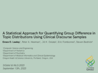

A Statistical Approach for Quantifying Group Difference in Topic Distributions Using Clinical Discourse Samples
Grace Lawley, Peter A. Heeman, Jill K. Dolata, Eric Fombonne, Steven Bedrick
In Sessions:
Sigdial Oral Session 1: Analysis of discourse and dialogue: (Wednesday, 10:45 CEST, Sun I , Watch on Zoom , Chat on Discord )
Poster

Abstract:
Topic distribution matrices created by topic models are typically used for document classification or as features in a separate machine learning algorithm. Existing methods for evaluating these topic distributions include metrics such as coherence and perplexity; however, there is a lack of statistically grounded evaluation tools. We present a statistical method for investigating group differences in the document-topic distribution vectors created by Latent Dirichlet Allocation (LDA) that uses Aitchison geometry to transform the vectors, multivariate analysis of variance (MANOVA) to compare sample means, and partial eta squared to calculate effect size. Using a corpus of dialogues between Autistic and Typically Developing (TD) children and trained examiners, we found that the topic distributions of Autistic children differed from those of TD children when responding to questions about social difficulties (p = .0083, partial eta squared = .19). Furthermore, the examiners' topic distributions differed between the Autistic and TD groups when discussing emotions (p = .0035, partial eta squared = .20), social difficulties (p < .001, partial eta squared = .30), and friends (p = .0224, partial eta squared = .17). These results support the use of topic modeling in studying clinically relevant features of social communication such as topic maintenance.